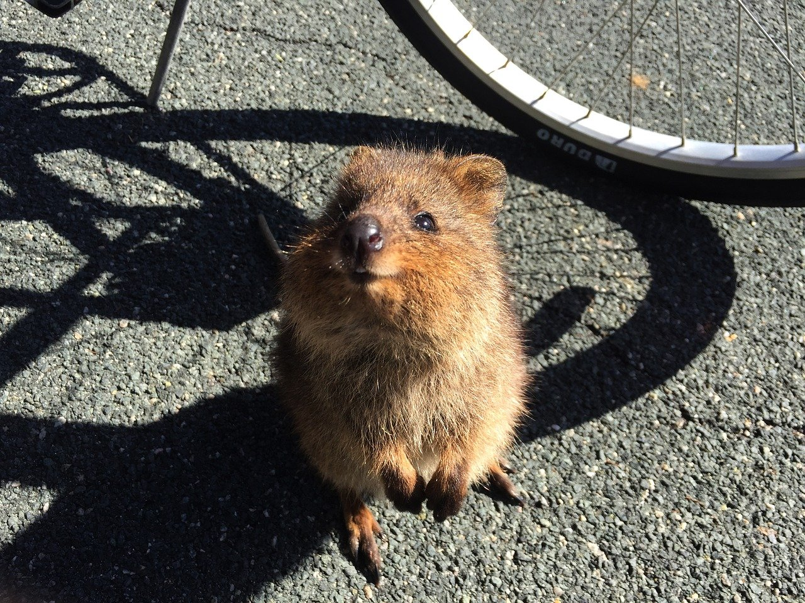

QUOKKA
Lebensraum
Quokkas leben in Australien, fast ausschließlich auf den Inseln Rottnest Island und Bald Island. Sie leben vor allem in dichten Wäldern und Sümpfen, aber auch in offenen Waldgebieten und Buschland. In trockeneren Gebieten halten sie sich nur auf, wenn sie trotzdem genug frisches Wasser, Schatten und ausreichend Pflanzen finden.
Infos:
- Familie: Kängarus
- Gewicht: 3 kg
- Größe: 40-75 cm
- Lebensdauer: 10-15 Jahre
- Nahrung: Gräser, Blätter, Kräuter, Pflanzen, Früchte
- Feinde: Katzen, Füchse, Hunde
Das Selfie-Tier

Quokkas gelten als „DIE Selfie-Tiere“. Jedes Jahr kommen unzählige Touristen nach Rottnest Island, um ein Foto von sich mit den lächelnden Kängurus zu machen. Die neugierigen Tiere haben wenig scheu vor den Menschen, was ein Selfie außerdem deutlich leichter macht. Damit es für ein Foto posiert, locken sie die Tiere mit Keksen oder anderen Lebensmitteln. An solcher Nahrung können Quokkas jedoch sterben. Daher ist es strengstens verboten, sie zu füttern.